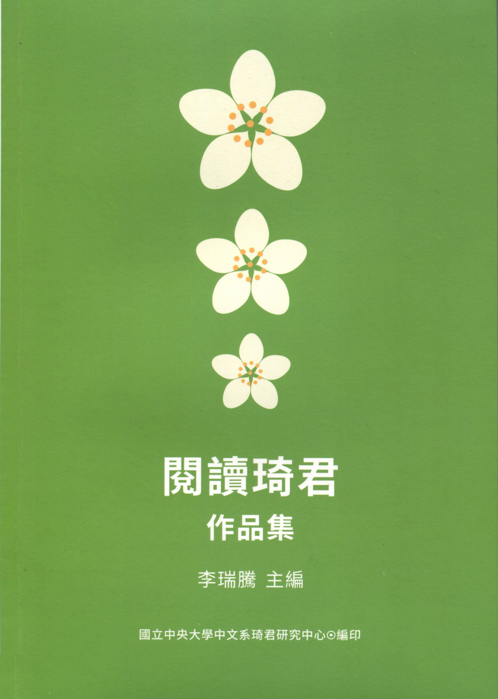

研究中心出版品
| 《閱讀琦君作品集》 | ||
|---|---|---|
|

李瑞騰主編 中央大學琦君研究中心 2014年出版 簡介：此作品集為二零一四年閱讀琦君徵文的得獎作品結集。徵文組別為成人組與高中組，各有八篇得獎作品收錄於此。目次：序/李瑞騰 / 001【輯一】 陳威宏：《琦君書信集》夜讀有感 / 1 龔靖筑：時光的掌紋 / 6 邱于真：恆溫 / 10 朱昀：半生怨化作慈悲情 / 14 黃惠鈴：煙愁不愁 / 20 黃柔靜：童年 / 26 林素梅：品茗書香秋意濃 / 30 葛喬源：細讀琦君散文──深入淺出的理趣 / 36 【輯二】 序 / 李瑞騰2005年12月，在琦君夫婿李唐基先生的協助下，我在國立中央大學成立了一個系級的琦君研究中心。 我們以舉辦一場「琦君及其同時代女作家研討會」來宣告中心成立，會議地點借用台師大教育大樓國際會議廳，琦君賢伉儷也參與了這場盛會；之後並在佛光山台北道場辦了一場「琦君文學專題研究生論文發表會」（那一年我特別在系裡開了一門「琦君文學專題研究」的課）。兩場研討會的論文經作者修改後於次年七月分別出版。 到2010年2月我借調國立台灣文學館為止，我們做了兩件大事：一件是在琦君辭世後，在台北市圖總館為她辦了一場「細雨紛飛，燈花已落——懷念永遠的琦君追思會」（2006年7月24日）；一件是編印《琦君書信集》，且在台北台大校友會館舉行新書發表及座談會。後者其實是國科會計畫「琦君資料彙整及作品重探」的成果，由我和莊宜文老師共同執行，書則由國立台灣文學館出版，活動之後我們且將收集到的琦君書信全數捐給台文館。在校內則策畫了「琦君月」活動，辦演講、閱讀琦君徵文比賽等；而參與琦君書信整理的碩士生王育美，2007年完成了碩士論文〈琦君書信研究〉。 我在台南四年期間，雖仍返校義務上課，但畢竟沒有多餘的力氣，僅要求在此工讀的研究生做最基本的管理工作。不過，有關琦君的工作其實沒有停頓，2011年8月，我和宜文帶了幾位研究生去了一趟琦君家鄉溫州，參加「兩岸琦君文化交流活動」，深刻感受到甌海當局對琦君文物的重視與期待，乃在返台後加快協商的步調，終獲唐基先生首肯捐贈琦君文物給台文館，時先生已多次進出醫院，纏綿病榻多時矣。 上萬件琦君文物入館典藏的事，由時任台文館研典組組長的許惠玟研究員負責，且和展教組程鵬升合作，於2013年10月辦成「永是有情人——琦君捐贈展」。在此過程中，惠玟和琦君兒媳陳麗娜女士互動融洽，結成莫逆之交；12月，唐基先生辭世，台文館在惠玟帶領下協助辦理了告別式，彙編了先生作品集，並為先生製作追思影片。 今年二月，我歸建中央大學，重新思考中心的經營管理，首先改版網頁，充實內容，再規畫活動，現在出版的《閱讀琦君》，即是同名活動的得獎作品集。我始終覺得，琦君文學的「永恆的溫柔」值得我們更深刻體會，閱讀她的文學作品是懷念她的最好方式，以前我們在校內辦過一次，這一回向全民開放，成效不錯，我們會考慮續辦下去。 中文系碩士生張瑞玲、陳鈺婷、龔偉健負責整個活動，瑞玲在美編、出版方面付出不少，非常感謝；幾位研究生幫忙初複審，出身本系的朱嘉雯、梁竣瓘、李欣倫、黃啟峰四位博士協助最後決審，特此致謝。本書出版時，我們將有一場活動，邀請麗娜女士來校贈獎並參與座談，談談她的婆婆——我們永遠懷念的琦君老師。 | ||